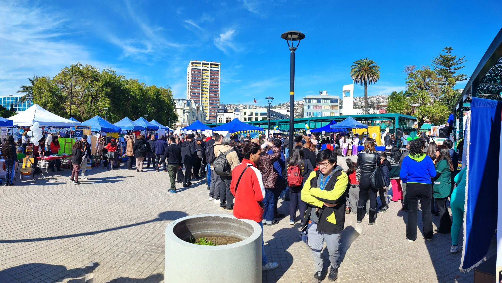
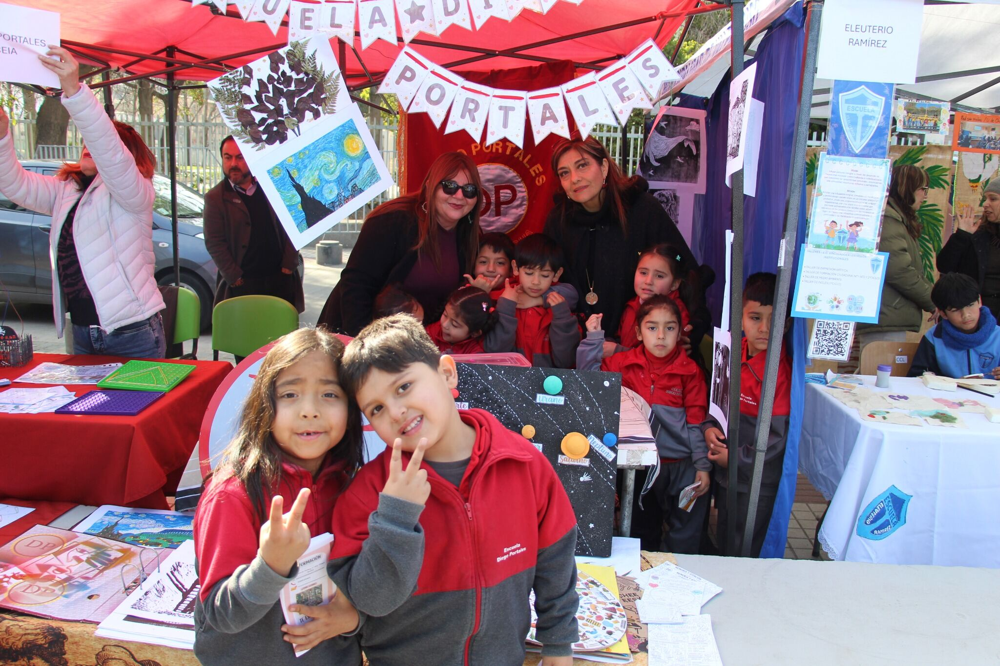
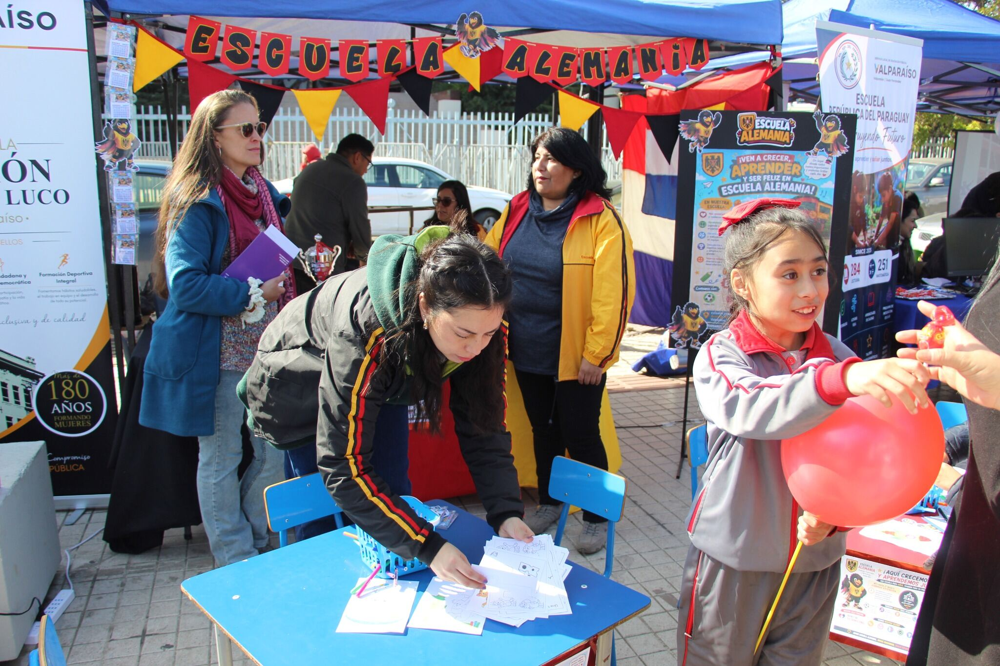
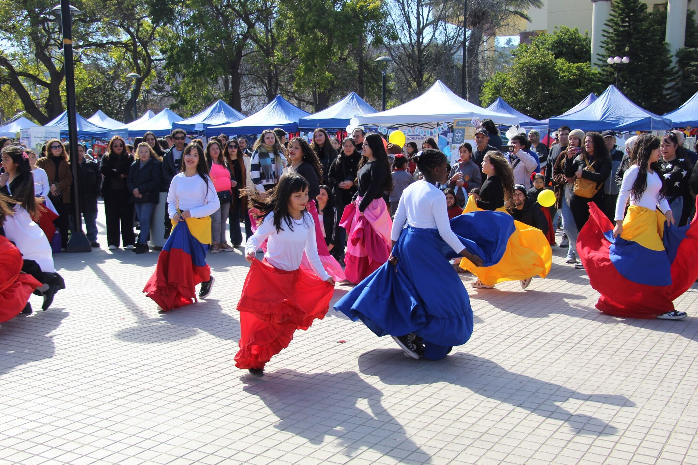

Más de 50 establecimientos participaron en la Segunda Feria de Educación Pública de Valparaíso
Las autoridades y comunidades educativas destacaron la masiva convocatoria de la feria, valorándola como una oportunidad para mostrar sus proyectos y acercar la educación pública a las familias de Valparaíso.

Valparaíso, 12 de agosto de 2026. — La educación pública porteña se tomó la Plaza O'Higgins en Valparaíso con la realización de la segunda versión de la Gran Feria de la Educación Pública local, instancia que reunió cerca de 59 establecimientos educacionales dependientes del Servicio Local de Educación Pública (SLEP) de Valparaíso.
La actividad reunió a distintos miembros de las comunidades educativas entre ellos estudiantes, docentes, asistentes de la educación, equipos directivos y autoridades de la comuna, quienes recorrieron los distintos stands levantados para conocer los diversos proyectos educativos desarrollados y sellos de cada una de las instituciones presentes.

El Director Ejecutivo Suplente del SLEPV, Miguel Solís, explicó que esta instancia busca reflejar la diversidad y la riqueza de la educación pública de la comuna.
"Hoy 59 establecimientos públicos han participado en la feria, lo que refleja la riqueza del sistema. Aquí está el compromiso de los profesores y asistentes de la educación de mejorar los procesos educativos para los niños, niñas y jóvenes que estudian en nuestros establecimientos. Estamos contentos y agradecidos de los equipos educativos y de las autoridades que han venido y colmado este espacio, dónde la educación pública se toma el centro de Valparaíso".
Agregó que la instancia permitió acercar la oferta educativa a los porteños: "El objeto es mostrar a las familias los proyectos educativos, los sellos de cada uno de los colegios que están en el plan y en los cerros de Valparaíso, para que puedan conocernos y matricular a sus niños, niñas, jóvenes y también a los adultos en la educación pública".

Por su parte, la jefa provincial de Educación de Valparaíso, Gabriela Orfali, destacó la alta convocatoria alcanzada y el trabajo conjunto entre los distintos miembros de la comunidad educativa.
"Quiero felicitar a los establecimientos por juntarse, por tener esta convocatoria, que demuestra todo lo que se hace en la educación y el compromiso de las comunidades para exhibir el desarrollo y potencial que tiene la educación pública".
Entre los establecimientos presentes estuvo, por ejemplo, el Centro Educativo Gran Bretaña. Su directora, Olga Jiménez, valoró la oportunidad de mostrar el trabajo formativo en sus distintos niveles:
"Es muy bueno que la gente nos conozca y que nosotros también conozcamos y compartamos con otros establecimientos; es una oportunidad para poder mostrar lo que hacemos".
Al cierre de la jornada, Jessica Gallardo, presidenta del Comité Directivo de SLEP Valparaíso, entidad coorganizadora del evento, declaró:
"Es un éxito para nosotros que los establecimientos se presenten a mostrar sus proyectos educativos. Estamos con el corazón hinchado, con los casi 60 establecimientos que participaron en esta segunda versión de la feria".

Con esta segunda versión del encuentro, el SLEP Valparaíso reafirmó su compromiso con el fortalecimiento y la visibilización de la educación pública en la comuna, invitando a las familias porteñas a conocer y matricularse en sus establecimientos.